Im Menüpunkt
1 WinLine START
1 Optionen
1 Bankleitzahlen
können beliebig viele Bankleitzahlen angelegt und gepflegt werden. Das Fenster ist hierbei in 3 Register unterteilt, die verschiedene Funktionen haben:
Selektion
Im Register Selektion können Einschränkungen vorgenommen werden, die für die Anzeige der nachfolgenden Register gelten.
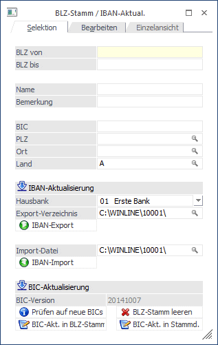
Ø BLZ von / BLZ bis
Einschränkung der BLZ die in weiterer Folge bearbeitet werden sollen.
Ø Name
Name der Bankverbindung
Ø Bemerkung
Einschränkung des Textes, der bei der Bank hinterlegt ist.
Ø BIC - Bankenidentifikationscode
20stelliges, alphanumerisches Feld. Über dieses Feld kann jede Bank weltweit unterschieden werden - wird auch beim Zahlungsverkehr mit übergeben.
Ø PLZ, Ort
Einschränkung der PLZ bzw. des Ortes, in dem sich die Bank befindet.
Ø Land
Hier kann das Landeskennzeichen eingeschränkt werden, wobei der Wert aus der Einstellung aus dem Mandantenstamm vorbesetzt wird.
Durch Drücken der F5-Taste wird das Register Bearbeiten geöffnet und alle BLZ, die den Einschränkungen entsprechen, werden zur Bearbeitung vorgeschlagen.
IBAN-Aktualisierung
Mittels IBAN-Aktualisierung besteht die Möglichkeit, vorhandene Kontonummern in Verbindung mit der Bankleitzahl als Datei (IBAN_Export_2012KontonummerHausbank.csv) zu exportieren, diese an das Bankinstitut zu übermitteln und in weiterer Folge die von der Bank überarbeitete Datei wieder zu importieren.
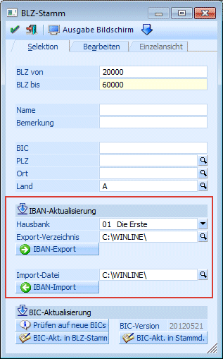
Ø Hausbank
Aus der Auswahllistbox kann eine der angelegten Hausbanken gewählt werden.
Ø Export-Verzeichnis
Angabe jenes Verzeichnisses in das die Datei geschrieben werden soll. Der Standardvorschlag ist das WinLine-Verzeichnis des Benutzers.
Ø IBAN-Export
Durch Anwahl dieses Buttons wird, nach Bestätigung der Sicherheitsabfrage, der Export gestartet und die Datei erzeugt.
Ø Import-Datei
Angabe des Verzeichnisses und des Dateiennamens der Importdatei. Der Standardvorschlag für das Verzeichnis ist hierzu das WinLine-Verzeichnis des Benutzers.
Ø IBAN-Import
Durch Anwahl dieses Buttons wird, nach Bestätigung der entsprechenden Meldung, der Import gestartet.
BIC-Aktualisierung
In diesem Bereich besteht die Möglichkeit die BIC-Aktualisierung durchzuführen. D.h. es kann geprüft werden ob aktuelle BIC""s zur Verfügung stehen, welche in weiterer Folge im Bankleitzahlenstamm und in den weiteren Stammdaten aktualisiert werden können.
Ø Prüfen auf neue BICs
Über den Button "Prüfen auf neue BICs" wird geprüft, ob am mesonic Server eine neue BIC-Version vorhanden ist. Sind aktuelle BIC Stammdaten vorhanden erscheint eine entsprechende Meldung.
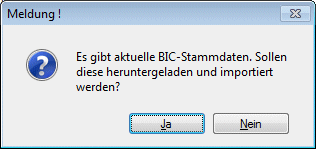
Der erfolgreiche Download wird ebenfalls mit entsprechender Meldung angezeigt:
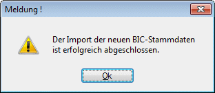
Ø BIC-Version
In diesem Bereich wird das Datum der im System vorhandenen "BIC-Version" angezeigt.
Ø BIC-Akt. in BLZ-Stamm
Um die BICs in den Systemtabellen zu aktualisieren, muss dieser Button gedrückt werden. Die weitere Meldung muss ebenfalls mit Ja bestätigt werden um den Abgleich zu starten.
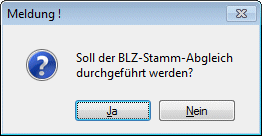
Eine weitere Meldung zeigt den Status des Abgleichs.
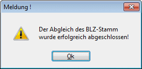
Sind bei dem Abgleich des BLZ-Stamms BICs aus sem BLZ-Stamm entfernt worden, kommt eine entsprechende Meldung und es wird ein Protokoll in den Spooler ausgegeben.
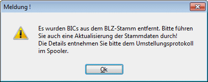
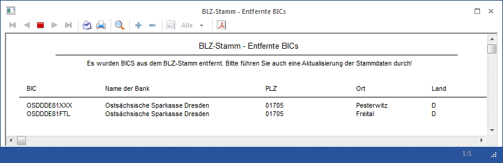
Ø BIC-Akt. in Stammd.
Über diesen Button kann der Abgleich der BICs in div. Stammdatenbereichen erfolgen (Personenkonten, Kontakte, Vertreter usw.).
Vor der BIC-Aktualisierung der Stammdaten sollte immer erst das "Prüfprotokoll / Vorschau" ausgegeben werden.
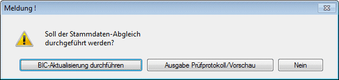
Ausgabe Prüfprotokoll / Vorschau
Bei der Ausgabe Prüfprotokoll/Vorschau wird das Prüfprotokoll in den Spooler ausgegeben. Anhand des Prüfprotokolls kann entschieden werden, ob ehemalige BICs überschrieben werden sollen.
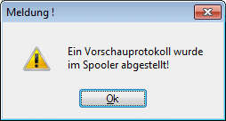
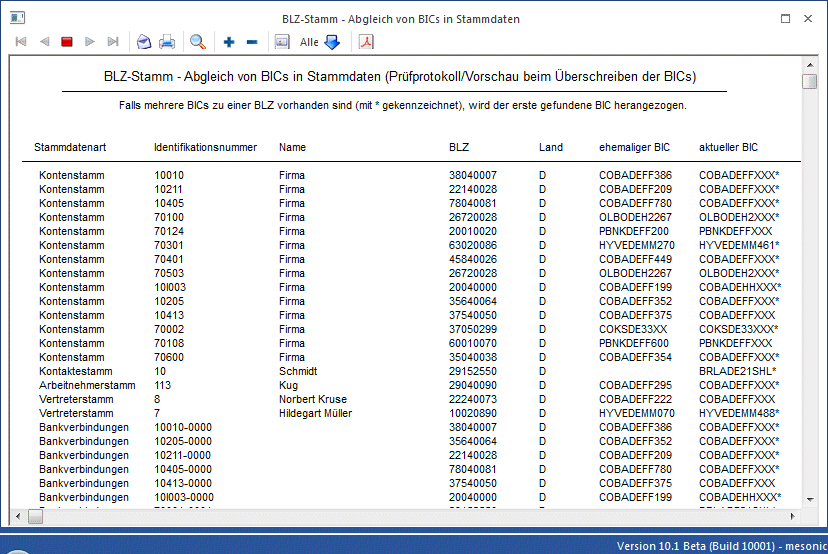
BIC-Aktualisierung durchführen
Hierüber erfolgt die BIC-Aktualisierung der Stammdaten (Personenkonten, Kontakte, Vertreter, Bankverbindungen etc.)
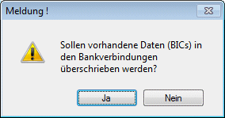
Ø Nein
Dadurch werden nur die Bankverbindungen aktualisiert, welche noch keinen BIC aber eine BLZ eingetragen haben.
Ø Ja
Es werden vorhandene BICs überschrieben, da "ehemaliger BIC" von "aktueller BIC" abweicht. Grundlage für die Aktualisierung ist die in der Bankverbindung hinterlegt BLZ! D.h. es werden auch die Bankverbindungen aktualisiert, in denen eine BIC und eine BLZ, welche aber nicht zum eingetragenen BIC passt, hinterlegt sind.
Beispiel:
Ein Arbeitnehmer hat die Bank gewechselt und es wurden nur die neue BIC und IBAN manuell gepflegt im AN-Stamm, die alte Kontonummer und BLZ wurden nicht geändert oder gelöscht. Somit weicht der "ehemalige BIC" von dem "aktuellen BIC" ab.
Nach bestätigter Meldung wird der Abgleich gestartet.
Der Status des Abgleichs wird wiederum mittels eigener Meldung angezeigt.
Ein Protokoll des Abgleichs der Stammdaten wird in den Spooler ausgegeben.
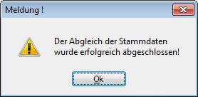
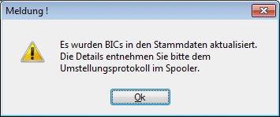
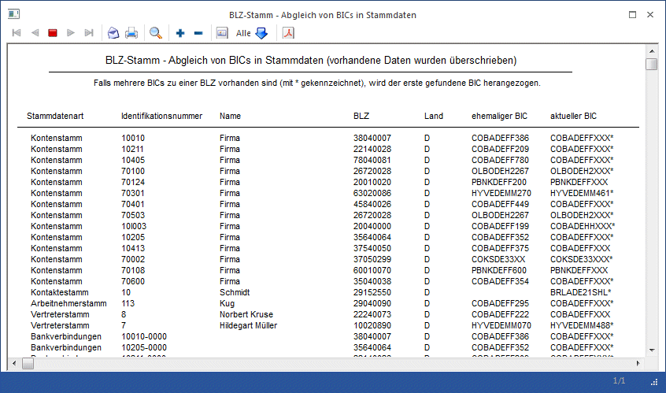
Ø BLZ-Stamm leeren
Hierüber werden alle Datensäzte aus dem BLZ-Stamm gelöscht und die BIC-Versions Nummer auf 20000101 zurückgesetzt.
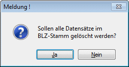
Nach erfolgreichem Löschen der Datensätze kommt eine Erfolgsmeldung:
Bearbeiten
In diesem Register können bestehenden BLZ bearbeitet und neue BLZ hinzugefügt werden.
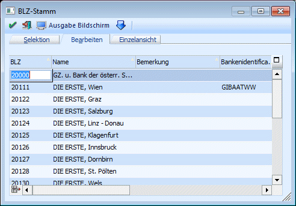
Dabei können folgende Felder bearbeitet werden:
Ø BLZ
Eingabe der BLZ. Die BLZ kann bis zu 10 Stellen lang sein.
Wenn im Feld BLZ eine Bankleitzahl eingetragen wird, die bereits vorhanden ist, dann wird folgende Meldung angezeigt:
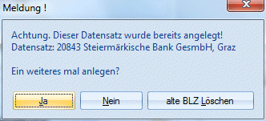
Wird die Meldung mit JA bestätigt, dann kann die BLZ ein zweites Mal angelegt werden. Wenn die Meldung mit NEIN bestätigt wird, dann kann die BLZ muss geändert werden. Wenn die Meldung mit "alte BLZ Löschen" bestätigt wird, dann wird die bereits vorhandene BLZ gelöscht und die neu Angelegte kann bearbeitet werden.
Hinweis:
Auch wenn eine BLZ doppelt vorhanden ist, wird immer nur der erste Eintrag verwendet. D.h. es ist nicht sinnvoll, eine BLZ ein zweites Mal anzulegen.
Ø Name
Name der Bankverbindung
Ø Bemerkung
Einschränkung des Textes, der bei der Bank hinterlegt ist.
Ø BIC - Bankenidentifikationscode
20stelliges, alphanumerisches Feld. Über dieses Feld kann jede Bank weltweit unterschieden werden - wird auch beim Zahlungsverkehr mit übergeben.
Ø Straße, PLZ, Ort
Hinterlegung der Adresse der Bank
Ø Land
Hier wird das Land angezeigt, dass beim Landescode hinterlegt wurde. Wird kein Landescode eingetragen, wird auch kein Land angezeigt.
Ø Landescode
Hier kann das ISO-Landeskennzeichen (z.B. AT, DE, CH etc.) der angelegten Bankleitzahl eingetragen werden. Aus der Auswahllistbox können alle Länderkennzeichen ausgewählt werden, die über den Menüpunkt Optionen/Länderstamm angelegt wurden.
Ø Typ
Aus der Auswahllistbox kann der Typ der Bank ausgewählt werden. Dabei werden die Typen angezeigt, die im Länderstamm hinterlegt wurden (z.B. 04 für Italian Bank Code oder 02 für French Bank Code).
Um im Länderstamm die Codeliste anzeigen zu können, müssen Sie die Datei mesonic.ini um folgenden Eintrag erweitern:
[Laenderstamm]
ShowCodeListe=1
Diese Bankleitzahlen können in weiterer Folge in den Bankenstammdaten hinterlegt werden. Dies ist dann die Basis für die Durchführung eines (Auslands-)Zahlungsverkehrs.
Durch Drücken der F5-Taste werden alle vorgenommenen Einstellungen gespeichert. Während des Speicherns wird der Fortschritt in einem Statusfenster (mit Abbruchmöglichkeit) angezeigt. Durch Drücken der ESC-Taste wird das Fenster geschlossen. Durch Anklicken des Entfernen-Buttons wird der gerade aktive Eintrag aus der Tabelle gelöscht.
Hinweis
Bankdaten können auch nur mit einer BIC ohne BLZ gespeichert werden.
Buttons
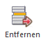
Wird im Menü Optionen / "BLZ-Stammdaten/IBAN-Aktual." vom Start-Programm der Button "Entfernen" im Register Bearbeiten zum Löschen einer BIC angewählt, so wird die Zeile mit der Farbe rot markiert. Der Hinweis "Soll die markierte BLZ wirklich gelöscht werden?" mit Nein bestätigt, springt ins Menü zurück. Wird die Abfrage mit Ja bestätigt, so wird diese Zeile gelöscht und das Programm bleibt weiterhin in diesem Register.
Einzelansicht
Im Register Einzelansicht können einzelne Banken editiert bzw. bearbeitet werden.
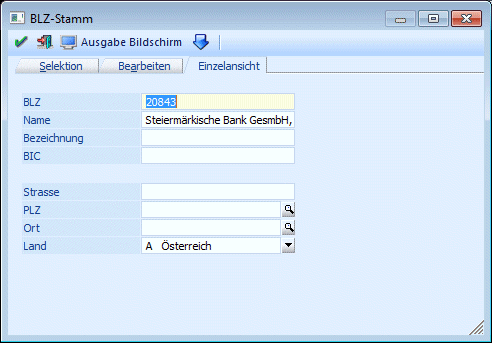
Ø BLZ
Eingabe der BLZ. Die BLZ kann bis zu 10 Stellen lang sein.
Ø Name
Name der Bankverbindung
Ø Bezeichnung
Eingabe eines Textes
Ø BIC - Bankenidentifikationscode
20stelliges, alphanumerisches Feld. Über dieses Feld kann jede Bank weltweit unterschieden werden - wird auch beim Zahlungsverkehr mit übergeben.
Ø Straße, PLZ, Ort
Hinterlegung der Adresse der Bank
Ø Straße, PLZ, Ort
Hinterlegung der Adresse der Bank
Ø Land
Hier wird das Land angezeigt, dass beim Landescode hinterlegt wurde. Wird kein Landescode eingetragen, wird auch kein Land angezeigt.
Ø  OK
OK
Durch Drücken der F5-Taste bzw. des OK-Buttons werden alle vorgenommenen Einstellungen gespeichert.
Ø  ENDE
ENDE
Durch Drücken der ESC-Taste oder des Ende-Buttons wird das Fenster geschlossen.
Ø
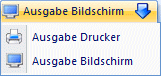
Ausgabe Bildschirm/Ausgabe DruckerDurch Anwählen dieses Buttons, bzw. Auswahl des Eintrages "Ausgabe Drucker / Ausgabe Bildschirm" können alle Bankleitzahlen die den im Register Selektion vorgenommenen Einstellungen entsprechend ausgedruckt werden.